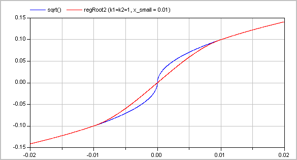

Extends from Modelica.Icons.Package (Icon for standard packages).
| Name | Description |
|---|---|
| Check whether boundary definition is correct | |
| Anti-symmetric square root approximation with finite derivative in the origin | |
| Derivative of regRoot | |
| Anti-symmetric square approximation with non-zero derivative in the origin | |
| Anti-symmetric power approximation with non-zero derivative in the origin | |
| Anti-symmetric approximation of square root with discontinuous factor so that the first derivative is finite and continuous | |
| Anti-symmetric approximation of square with discontinuous factor so that the first derivative is non-zero and is continuous | |
| Approximation of a general step, such that the characteristic is continuous and differentiable | |
| Evaluate polynomial of order 3 that passes the origin with a predefined derivative | |
| Co-monotonic and C1 smooth regularization function | |
| Evaluate a cubic Hermite spline | |
| Evaluate a cubic Hermite spline, return value and derivative |
 Modelica.Fluid.Utilities.checkBoundary
Modelica.Fluid.Utilities.checkBoundary
| Type | Name | Default | Description |
|---|---|---|---|
| String | mediumName | ||
| String | substanceNames[:] | Names of substances | |
| Boolean | singleState | ||
| Boolean | define_p | ||
| Real | X_boundary[:] | ||
| String | modelName | "??? boundary ???" |
function checkBoundary "Check whether boundary definition is correct"
extends Modelica.Icons.Function;
input String mediumName;
input String substanceNames[:] "Names of substances";
input Boolean singleState;
input Boolean define_p;
input Real X_boundary[:];
input String modelName = "??? boundary ???";
protected
Integer nX = size(X_boundary,1);
String X_str;
algorithm
assert(not singleState or singleState and define_p, "
Wrong value of parameter define_p (= false) in model \"" + modelName + "\":
The selected medium \""
+ mediumName + "\" has Medium.singleState=true.
Therefore, an boundary density cannot be defined and
define_p = true is required.
");
for i in 1:nX loop
assert(X_boundary[i] >= 0.0, "
Wrong boundary mass fractions in medium \""
+ mediumName + "\" in model \"" + modelName + "\":
The boundary value X_boundary("
+ String(i) + ") = " + String(
X_boundary[i]) + "
is negative. It must be positive.
");
end for;
if nX > 0 and abs(sum(X_boundary) - 1.0) > 1.e-10 then
X_str :="";
for i in 1:nX loop
X_str :=X_str + " X_boundary[" + String(i) + "] = " + String(X_boundary[
i]) + " \"" + substanceNames[i] + "\"\n";
end for;
Modelica.Utilities.Streams.error(
"The boundary mass fractions in medium \"" + mediumName + "\" in model \"" + modelName + "\"\n" +
"do not sum up to 1. Instead, sum(X_boundary) = " + String(sum(X_boundary)) + ":\n"
+ X_str);
end if;
end checkBoundary;
Modelica.Fluid.Utilities.regRoot
| Function | Approximation | Range |
|---|---|---|
| y = regRoot(x) | y ~= sqrt(abs(x))*sgn(x) | abs(x) >>delta |
| y = regRoot(x) | y ~= x/sqrt(delta) | abs(x) << delta |
With the default value of delta=0.01, the difference between sqrt(x) and regRoot(x) is 16% around x=0.01, 0.25% around x=0.1 and 0.0025% around x=1.
Extends from Modelica.Icons.Function (Icon for functions).
| Type | Name | Default | Description |
|---|---|---|---|
| Real | x | ||
| Real | delta | 0.01 | Range of significant deviation from sqrt(abs(x))*sgn(x) |
| Type | Name | Description |
|---|---|---|
| Real | y |
function regRoot
"Anti-symmetric square root approximation with finite derivative in the origin"
annotation(derivative=Utilities.regRoot_der);
extends Modelica.Icons.Function;
input Real x;
input Real delta=0.01
"Range of significant deviation from sqrt(abs(x))*sgn(x)";
output Real y;
algorithm
y := x/(x*x+delta*delta)^0.25;
end regRoot;
Modelica.Fluid.Utilities.regRoot_der
Extends from Modelica.Icons.Function (Icon for functions).
| Type | Name | Default | Description |
|---|---|---|---|
| Real | x | ||
| Real | delta | 0.01 | Range of significant deviation from sqrt(x) |
| Real | dx | Derivative of x |
| Type | Name | Description |
|---|---|---|
| Real | dy |
function regRoot_der "Derivative of regRoot" extends Modelica.Icons.Function; input Real x; input Real delta=0.01 "Range of significant deviation from sqrt(x)"; input Real dx "Derivative of x"; output Real dy; algorithm dy := dx*0.5*(x*x+2*delta*delta)/((x*x+delta*delta)^1.25);end regRoot_der;
Modelica.Fluid.Utilities.regSquare
| Function | Approximation | Range |
|---|---|---|
| y = regSquare(x) | y ~= x^2*sgn(x) | abs(x) >>delta |
| y = regSquare(x) | y ~= x*delta | abs(x) << delta |
With the default value of delta=0.01, the difference between x^2 and regSquare(x) is 41% around x=0.01, 0.4% around x=0.1 and 0.005% around x=1.
Extends from Modelica.Icons.Function (Icon for functions).
| Type | Name | Default | Description |
|---|---|---|---|
| Real | x | ||
| Real | delta | 0.01 | Range of significant deviation from x^2*sgn(x) |
| Type | Name | Description |
|---|---|---|
| Real | y |
function regSquare "Anti-symmetric square approximation with non-zero derivative in the origin" extends Modelica.Icons.Function; input Real x; input Real delta=0.01 "Range of significant deviation from x^2*sgn(x)"; output Real y; algorithm y := x*sqrt(x*x+delta*delta);end regSquare;
Modelica.Fluid.Utilities.regPow
| Function | Approximation | Range |
|---|---|---|
| y = regPow(x) | y ~= abs(x)^a*sgn(x) | abs(x) >>delta |
| y = regPow(x) | y ~= x*delta^(a-1) | abs(x) << delta |
Extends from Modelica.Icons.Function (Icon for functions).
| Type | Name | Default | Description |
|---|---|---|---|
| Real | x | ||
| Real | a | ||
| Real | delta | 0.01 | Range of significant deviation from x^a*sgn(x) |
| Type | Name | Description |
|---|---|---|
| Real | y |
function regPow "Anti-symmetric power approximation with non-zero derivative in the origin" extends Modelica.Icons.Function; input Real x; input Real a; input Real delta=0.01 "Range of significant deviation from x^a*sgn(x)"; output Real y; algorithm y := x*(x*x+delta*delta)^((a-1)/2);end regPow;
Modelica.Fluid.Utilities.regRoot2
Approximates the function
y = if x ≥ 0 then sqrt(k1*x) else -sqrt(k2*abs(x)), with k1, k2 ≥ 0
in such a way that within the region -x_small ≤ x ≤ x_small, the function is described by two polynomials of third order (one in the region -x_small .. 0 and one within the region 0 .. x_small) such that
Typical screenshots for two different configurations are shown below. The first one with k1=k2=1:

and the second one with k1=1 and k2=3:

The (smooth) derivative of the function with k1=1, k2=3 is shown in the next figure:

Literature
Extends from Modelica.Icons.Function (Icon for functions).
| Type | Name | Default | Description |
|---|---|---|---|
| Real | x | abscissa value | |
| Real | x_small | 0.01 | approximation of function for |x| <= x_small |
| Real | k1 | 1 | y = if x>=0 then sqrt(k1*x) else -sqrt(k2*|x|) |
| Real | k2 | 1 | y = if x>=0 then sqrt(k1*x) else -sqrt(k2*|x|) |
| Boolean | use_yd0 | false | = true, if yd0 shall be used |
| Real | yd0 | 1 | Desired derivative at x=0: dy/dx = yd0 |
| Type | Name | Description |
|---|---|---|
| Real | y | ordinate value |
function regRoot2 "Anti-symmetric approximation of square root with discontinuous factor so that the first derivative is finite and continuous" extends Modelica.Icons.Function; input Real x "abscissa value"; input Real x_small(min=0)=0.01 "approximation of function for |x| <= x_small"; input Real k1(min=0)=1 "y = if x>=0 then sqrt(k1*x) else -sqrt(k2*|x|)"; input Real k2(min=0)=1 "y = if x>=0 then sqrt(k1*x) else -sqrt(k2*|x|)"; input Boolean use_yd0 = false "= true, if yd0 shall be used"; input Real yd0(min=0)=1 "Desired derivative at x=0: dy/dx = yd0"; output Real y "ordinate value"; protectedencapsulated function regRoot2_utility "Interpolating with two 3-order polynomials with a prescribed derivative at x=0" import Modelica.Fluid.Utilities.evaluatePoly3_derivativeAtZero; input Real x; input Real x1 "approximation of function abs(x) < x1"; input Real k1 "y = if x>=0 then sqrt(k1*x) else -sqrt(k2*|x|); k1 >= k2"; input Real k2 "y = if x>=0 then sqrt(k1*x) else -sqrt(k2*|x|))"; input Boolean use_yd0 "= true, if yd0 shall be used"; input Real yd0(min=0) "Desired derivative at x=0: dy/dx = yd0"; output Real y; protected Real x2; Real xsqrt1; Real xsqrt2; Real y1; Real y2; Real y1d; Real y2d; Real w; Real y0d; Real w1; Real w2; algorithm if k2 > 0 then x2 :=-x1*(k2/k1); else x2 := -x1; end if; if x <= x2 then y := -sqrt(k2*abs(x)); else y1 :=sqrt(k1*x1); y2 :=-sqrt(k2*abs(x2)); y1d :=sqrt(k1/x1)/2; y2d :=sqrt(k2/abs(x2))/2; if use_yd0 then y0d :=yd0; else /* Determine derivative, such that first and second derivative of left and right polynomial are identical at x=0: _ Basic equations: y_right = a1*(x/x1) + a2*(x/x1)^2 + a3*(x/x1)^3 y_left = b1*(x/x2) + b2*(x/x2)^2 + b3*(x/x2)^3 yd_right*x1 = a1 + 2*a2*(x/x1) + 3*a3*(x/x1)^2 yd_left *x2 = b1 + 2*b2*(x/x2) + 3*b3*(x/x2)^2 ydd_right*x1^2 = 2*a2 + 6*a3*(x/x1) ydd_left *x2^2 = 2*b2 + 6*b3*(x/x2) _ Conditions (6 equations for 6 unknowns): y1 = a1 + a2 + a3 y2 = b1 + b2 + b3 y1d*x1 = a1 + 2*a2 + 3*a3 y2d*x2 = b1 + 2*b2 + 3*b3 y0d = a1/x1 = b1/x2 y0dd = 2*a2/x1^2 = 2*b2/x2^2 _ Derived equations: b1 = a1*x2/x1 b2 = a2*(x2/x1)^2 b3 = y2 - b1 - b2 = y2 - a1*(x2/x1) - a2*(x2/x1)^2 a3 = y1 - a1 - a2 _ Remaining equations y1d*x1 = a1 + 2*a2 + 3*(y1 - a1 - a2) = 3*y1 - 2*a1 - a2 y2d*x2 = a1*(x2/x1) + 2*a2*(x2/x1)^2 + 3*(y2 - a1*(x2/x1) - a2*(x2/x1)^2) = 3*y2 - 2*a1*(x2/x1) - a2*(x2/x1)^2 y0d = a1/x1 _ Solving these equations results in y0d below (note, the denominator "(1-w)" is always non-zero, because w is negative) */ w :=x2/x1; y0d := ( (3*y2 - x2*y2d)/w - (3*y1 - x1*y1d)*w) /(2*x1*(1 - w)); end if; /* Modify derivative y0d, such that the polynomial is monotonically increasing. A sufficient condition is 0 <= y0d <= sqrt(8.75*k_i/|x_i|) */ w1 :=sqrt(8.75*k1/x1); w2 :=sqrt(8.75*k2/abs(x2)); y0d :=min(y0d, 0.9*min(w1, w2)); /* Perform interpolation in scaled polynomial: y_new = y/y1 x_new = x/x1 */ y := y1*(if x >= 0 then evaluatePoly3_derivativeAtZero(x/x1,1,1,y1d*x1/y1,y0d*x1/y1) else evaluatePoly3_derivativeAtZero(x/x1,x2/x1,y2/y1,y2d*x1/y1,y0d*x1/y1)); end if; end regRoot2_utility ; algorithm y := smooth(2, if x >= x_small then sqrt(k1*x) else if x <= -x_small then -sqrt(k2*abs(x)) else if k1 >= k2 then regRoot2_utility(x,x_small,k1,k2,use_yd0,yd0) else -regRoot2_utility(-x,x_small,k2,k1,use_yd0,yd0));end regRoot2;
Modelica.Fluid.Utilities.regSquare2
Approximates the function
y = if x ≥ 0 then k1*x*x else -k2*x*x, with k1, k2 > 0
in such a way that within the region -x_small ≤ x ≤ x_small, the function is described by two polynomials of third order (one in the region -x_small .. 0 and one within the region 0 .. x_small) such that
A typical screenshot for k1=1, k2=3 is shown in the next figure:

The (smooth, non-zero) derivative of the function with k1=1, k2=3 is shown in the next figure:

Literature
Extends from Modelica.Icons.Function (Icon for functions).
| Type | Name | Default | Description |
|---|---|---|---|
| Real | x | abscissa value | |
| Real | x_small | 0.01 | approximation of function for |x| <= x_small |
| Real | k1 | 1 | y = (if x>=0 then k1 else k2)*x*|x| |
| Real | k2 | 1 | y = (if x>=0 then k1 else k2)*x*|x| |
| Boolean | use_yd0 | false | = true, if yd0 shall be used |
| Real | yd0 | 1 | Desired derivative at x=0: dy/dx = yd0 |
| Type | Name | Description |
|---|---|---|
| Real | y | ordinate value |
function regSquare2 "Anti-symmetric approximation of square with discontinuous factor so that the first derivative is non-zero and is continuous" extends Modelica.Icons.Function; input Real x "abscissa value"; input Real x_small(min=0)=0.01 "approximation of function for |x| <= x_small"; input Real k1(min=0)=1 "y = (if x>=0 then k1 else k2)*x*|x|"; input Real k2(min=0)=1 "y = (if x>=0 then k1 else k2)*x*|x|"; input Boolean use_yd0 = false "= true, if yd0 shall be used"; input Real yd0(min=0)=1 "Desired derivative at x=0: dy/dx = yd0"; output Real y "ordinate value"; protectedencapsulated function regSquare2_utility "Interpolating with two 3-order polynomials with a prescribed derivative at x=0" import Modelica.Fluid.Utilities.evaluatePoly3_derivativeAtZero; input Real x; input Real x1 "approximation of function abs(x) < x1"; input Real k1 "y = (if x>=0 then k1 else -k2)*x*|x|; k1 >= k2"; input Real k2 "y = (if x>=0 then k1 else -k2)*x*|x|"; input Boolean use_yd0 = false "= true, if yd0 shall be used"; input Real yd0(min=0)=1 "Desired derivative at x=0: dy/dx = yd0"; output Real y; protected Real x2; Real y1; Real y2; Real y1d; Real y2d; Real w; Real w1; Real w2; Real y0d; Real ww; algorithm // x2 :=-x1*(k2/k1)^2; x2 := -x1; if x <= x2 then y := -k2*x^2; else y1 := k1*x1^2; y2 :=-k2*x2^2; y1d := k1*2*x1; y2d :=-k2*2*x2; if use_yd0 then y0d :=yd0; else /* Determine derivative, such that first and second derivative of left and right polynomial are identical at x=0: see derivation in function regRoot2 */ w :=x2/x1; y0d := ( (3*y2 - x2*y2d)/w - (3*y1 - x1*y1d)*w) /(2*x1*(1 - w)); end if; /* Modify derivative y0d, such that the polynomial is monotonically increasing. A sufficient condition is 0 <= y0d <= sqrt(5)*k_i*|x_i| */ w1 :=sqrt(5)*k1*x1; w2 :=sqrt(5)*k2*abs(x2); // y0d :=min(y0d, 0.9*min(w1, w2)); ww :=0.9*(if w1 < w2 then w1 else w2); if ww < y0d then y0d :=ww; end if; y := if x >= 0 then evaluatePoly3_derivativeAtZero(x,x1,y1,y1d,y0d) else evaluatePoly3_derivativeAtZero(x,x2,y2,y2d,y0d); end if; end regSquare2_utility ; algorithm y := smooth(2,if x >= x_small then k1*x^2 else if x <= -x_small then -k2*x^2 else if k1 >= k2 then regSquare2_utility(x,x_small,k1,k2,use_yd0,yd0) else -regSquare2_utility(-x,x_small,k2,k1,use_yd0,yd0));end regSquare2;
Modelica.Fluid.Utilities.regStep
This function is used to approximate the equation
y = if x > 0 then y1 else y2;
by a smooth characteristic, so that the expression is continuous and differentiable:
y = smooth(1, if x > x_small then y1 else
if x < -x_small then y2 else f(y1, y2));
In the region -x_small < x < x_small a 2nd order polynomial is used for a smooth transition from y1 to y2.
Extends from Modelica.Icons.Function (Icon for functions).
| Type | Name | Default | Description |
|---|---|---|---|
| Real | x | Abscissa value | |
| Real | y1 | Ordinate value for x > 0 | |
| Real | y2 | Ordinate value for x < 0 | |
| Real | x_small | 1e-5 | Approximation of step for -x_small <= x <= x_small; x_small >= 0 required |
| Type | Name | Description |
|---|---|---|
| Real | y | Ordinate value to approximate y = if x > 0 then y1 else y2 |
function regStep
"Approximation of a general step, such that the characteristic is continuous and differentiable"
extends Modelica.Icons.Function;
input Real x "Abscissa value";
input Real y1 "Ordinate value for x > 0";
input Real y2 "Ordinate value for x < 0";
input Real x_small(min=0) = 1e-5
"Approximation of step for -x_small <= x <= x_small; x_small >= 0 required";
output Real y "Ordinate value to approximate y = if x > 0 then y1 else y2";
algorithm
y := smooth(1, if x > x_small then y1 else
if x < -x_small then y2 else
if x_small > 0 then (x/x_small)*((x/x_small)^2 - 3)*(y2-y1)/4 + (y1+y2)/2 else (y1+y2)/2);
end regStep;
Modelica.Fluid.Utilities.evaluatePoly3_derivativeAtZero
Extends from Modelica.Icons.Function (Icon for functions).
| Type | Name | Default | Description |
|---|---|---|---|
| Real | x | Value for which polynomial shall be evaluated | |
| Real | x1 | Abscissa value | |
| Real | y1 | y1=f(x1) | |
| Real | y1d | First derivative at y1 | |
| Real | y0d | First derivative at f(x=0) |
| Type | Name | Description |
|---|---|---|
| Real | y |
function evaluatePoly3_derivativeAtZero "Evaluate polynomial of order 3 that passes the origin with a predefined derivative" extends Modelica.Icons.Function; input Real x "Value for which polynomial shall be evaluated"; input Real x1 "Abscissa value"; input Real y1 "y1=f(x1)"; input Real y1d "First derivative at y1"; input Real y0d "First derivative at f(x=0)"; output Real y; protected Real a1; Real a2; Real a3; Real xx; algorithm a1 := x1*y0d; a2 := 3*y1 - x1*y1d - 2*a1; a3 := y1 - a2 - a1; xx := x/x1; y := xx*(a1 + xx*(a2 + xx*a3));end evaluatePoly3_derivativeAtZero;
Approximates a function in a region between x0 and x1
such that
In this region, a continuation is constructed from the given points
(x0, y0), (x1, y1) and the respective
derivatives. For this purpose, a single polynomial of third order or two
cubic polynomials with a linear section in between are used [Gasparo
and Morandi, 1991]. This algorithm was extended with two additional
conditions to avoid saddle points with zero/infinite derivative that lead to
integrator step size reduction to zero.
This function was developed for pressure loss correlations properly
addressing the static head on top of the established requirements
for monotonicity and smoothness. In this case, the present function
allows to implement the exact solution in the limit of
x1-x0 -> 0 or y1-y0 -> 0.
Typical screenshots for two different configurations
are shown below. The first one illustrates five different settings of xi and yid:

The second graph shows the continous derivative of this regularization function:

Literature
| Type | Name | Default | Description |
|---|---|---|---|
| Real | x | Abscissa value | |
| Real | x0 | Lower abscissa value | |
| Real | x1 | Upper abscissa value | |
| Real | y0 | Ordinate value at lower ordinate value | |
| Real | y1 | Ordinate value at upper ordinate value | |
| Real | y0d | Derivative at lower abscissa value | |
| Real | y1d | Derivative at upper abscissa value |
| Type | Name | Description |
|---|---|---|
| Real | y | Ordinate value |
| Real | c | Slope of linear section between two cubic polynomials or dummy linear section slope if single cubic is used |
function regFun3 "Co-monotonic and C1 smooth regularization function"
input Real x "Abscissa value";
input Real x0 "Lower abscissa value";
input Real x1 "Upper abscissa value";
input Real y0 "Ordinate value at lower ordinate value";
input Real y1 "Ordinate value at upper ordinate value";
input Real y0d "Derivative at lower abscissa value";
input Real y1d "Derivative at upper abscissa value";
output Real y "Ordinate value";
output Real c
"Slope of linear section between two cubic polynomials or dummy linear section slope if single cubic is used";
protected
Real h0 "Width of interval i=0";
Real Delta0 "Slope of secant on interval i=0";
Real xstar "Inflection point of cubic polynomial S0";
Real mu "Distance of inflection point and left limit x0";
Real eta "Distance of right limit x1 and inflection point";
Real omega "Slope of subic polynomial S0 at inflection point";
Real rho "Weighting factor of eta and eta_tilde, mu and mu_tilde";
Real theta0 "Slope metric";
Real mu_tilde "Distance of start of linear section and left limit x0";
Real eta_tilde "Distance of right limit x1 and end of linear section";
Real xi1 "Start of linear section ";
Real xi2 "End of linear section ";
Real a1 "Leading coefficient of cubic on the left";
Real a2 "Leading coefficient of cubic on the right";
Real const12 "Integration constant of left cubic, linear section";
Real const3 "Integration constant of right cubic";
Real aux01;
Real aux02;
Boolean useSingleCubicPolynomial = false
"Indicate to override further logic and use single cubic";
algorithm
assert(x0<x1, "regFun3(): Data points not sorted appropriately (x0 = "+String(x0)+" > x1 = "+String(x1)+"). Please flip arguments.");
h0 :=x1 - x0;
Delta0 :=(y1 - y0)/h0;
if abs(Delta0)<=0 then
// Points (x0,y0) and (x1,y1) on horizonzal line
// Degenerate case as we cannot fulfill the C1 goal an comonotone behaviour at the same time
y := y0; // == y1
else
// Points (x0,y0) and (x1,y1) not on horizonzal line
if abs(y1d+y0d-2*Delta0)<100*Modelica.Constants.eps then
xstar := (x1-x0)*(2*y0d+y1d-3*Delta0)*(if (y0d+y1d-2*Delta0)>=0 then 1 else -1)*Modelica.Constants.inf;
else
xstar :=1/3*(-3*x0*y0d - 3*x0*y1d + 6*x0*Delta0 - 2*h0*y0d - h0*y1d + 3*h0*
Delta0)/(-y0d - y1d + 2*Delta0);
end if;
mu :=xstar - x0;
eta :=x1 - xstar;
omega :=3*(y0d + y1d - 2*Delta0)*(xstar - x0)^2/h0^2 + 2*(-2*y0d - y1d + 3*
Delta0)*(xstar - x0)/h0 + y0d;
aux01 := 0.25 * sign(Delta0) * min(abs(omega), abs(Delta0))
"Slope c if not using plain cubic S0";
if abs(y0d-y1d)<=100*Modelica.Constants.eps then
// y0 == y1 (value and sign equal) -> resolve indefinite 0/0
aux02 := y0d;
if y1 > y0 + y0d*(x1-x0) then
// If y1 is above the linear extension through (x0/y0)
// with slope y0d (when slopes are identical)
// -> then always used single cubic polynomial
useSingleCubicPolynomial := true;
end if;
elseif abs(y1d+y0d-2*Delta0)<100*Modelica.Constants.eps then
// (y1d+y0d-2*Delta0) approximately 0 -> avoid division by 0
aux02 := (6*Delta0*(y1d+y0d-3/2*Delta0)-y1d*y0d-y1d^2-y0d^2)*(if (y1d+y0d-2*Delta0)>=0 then 1 else -1)*Modelica.Constants.inf;
else
// Okay, no guarding necessary
aux02 := (6*Delta0*(y1d+y0d-3/2*Delta0)-y1d*y0d-y1d^2-y0d^2)/(3*(y1d+y0d-2*Delta0));
end if;
//aux02 := -1/3*(y0d^2+y0d*y1d-6*y0d*Delta0+y1d^2-6*y1d*Delta0+9*Delta0^2)/(y0d+y1d-2*Delta0);
//aux02 := -1/3*(6*y1d*y0*x1+y0d*y1d*x1^2-6*y0d*x0*y0+y0d^2*x0^2+y0d^2*x1^2+y1d^2*x1^2+y1d^2*x0^2-2*y0d*x0*y1d*x1-2*x0*y0d^2*x1+y0d*y1d*x0^2+6*y0d*x0*y1-6*y0d*y1*x1+6*y0d*y0*x1-2*x0*y1d^2*x1-6*y1d*y1*x1+6*y1d*x0*y1-6*y1d*x0*y0-18*y1*y0+9*y1^2+9*y0^2)/(y0d*x1^2-2*x0*y0d*x1+y1d*x1^2-2*x0*y1d*x1-2*y1*x1+2*y0*x1+y0d*x0^2+y1d*x0^2+2*x0*y1-2*x0*y0);
// Test criteria (also used to avoid saddle points that lead to integrator contraction):
//
// 1. Cubic is not monotonic (from Gasparo Morandi)
// ((mu > 0) and (eta < h0) and (Delta0*omega <= 0))
//
// 2. Cubic may be monotonic but the linear section slope c is either too close
// to zero or the end point of the linear section is left of the start point
// Note however, that the suggested slope has to have the same sign as Delta0.
// (abs(aux01)<abs(aux02) and aux02*Delta0>=0)
//
// 3. Cubic may be monotonic but the resulting slope in the linear section
// is too close to zero (less than 1/10 of Delta0).
// (c < Delta0 / 10)
//
if (((mu > 0) and (eta < h0) and (Delta0*omega <= 0))
or (abs(aux01)<abs(aux02) and aux02*Delta0>=0)
or (abs(aux01)<abs(0.1*Delta0))) and not useSingleCubicPolynomial then
// NOT monotonic using plain cubic S0, use piecewise function S0 tilde instead
c := aux01;
// Avoid saddle points that are co-monotonic but lead to integrator contraction
if abs(c)<abs(aux02) and aux02*Delta0>=0 then
c := aux02;
end if;
if abs(c)<abs(0.1*Delta0) then
c := 0.1*Delta0;
end if;
theta0 := (y0d*mu + y1d*eta)/h0;
if abs(theta0 - c)<1e-6 then
// Slightly reduce c in order to avoid ill-posed problem
c := (1-1e-6)*theta0;
end if;
rho := 3*(Delta0 - c)/(theta0 - c);
mu_tilde := rho * mu;
eta_tilde := rho * eta;
xi1 := x0 + mu_tilde;
xi2 := x1 - eta_tilde;
a1 := (y0d - c)/max(mu_tilde^2, 100*Modelica.Constants.eps);
a2 := (y1d - c)/max(eta_tilde^2, 100*Modelica.Constants.eps);
const12 := y0 - a1/3*(x0 - xi1)^3 - c*x0;
const3 := y1 - a2/3*(x1 - xi2)^3 - c*x1;
// Do actual interpolation
if (x < xi1) then
y := a1/3*(x - xi1)^3 + c*x + const12;
elseif (x < xi2) then
y := c*x + const12;
else
y := a2/3*(x - xi2)^3 + c*x + const3;
end if;
else
// Cubic S0 is monotonic, use it as is
y := (y0d+y1d-2*Delta0)*(x-x0)^3/h0^2+(-2*y0d-y1d+3*Delta0)*(x-x0)^2/h0+y0d*(x-x0)+y0;
// Provide a "dummy linear section slope" as the slope of the cubic at x:=(x0+x1)/2
aux01 := (x0+x1)/2;
c := 3*(y0d+y1d-2*Delta0)*(aux01-x0)^2/h0^2+2*(-2*y0d-y1d+3*Delta0)*(aux01-x0)/h0+y0d;
end if;
end if;
end regFun3;
| Type | Name | Default | Description |
|---|---|---|---|
| Real | x | Abscissa value | |
| Real | x1 | Lower abscissa value | |
| Real | x2 | Upper abscissa value | |
| Real | y1 | Lower ordinate value | |
| Real | y2 | Upper ordinate value | |
| Real | y1d | Lower gradient | |
| Real | y2d | Upper gradient |
| Type | Name | Description |
|---|---|---|
| Real | y | Interpolated ordinate value |
function cubicHermite "Evaluate a cubic Hermite spline"
input Real x "Abscissa value";
input Real x1 "Lower abscissa value";
input Real x2 "Upper abscissa value";
input Real y1 "Lower ordinate value";
input Real y2 "Upper ordinate value";
input Real y1d "Lower gradient";
input Real y2d "Upper gradient";
output Real y "Interpolated ordinate value";
protected
Real h "Distance between x1 and x2";
Real t "abscissa scaled with h, i.e., t=[0..1] within x=[x1..x2]";
Real h00 "Basis function 00 of cubic Hermite spline";
Real h10 "Basis function 10 of cubic Hermite spline";
Real h01 "Basis function 01 of cubic Hermite spline";
Real h11 "Basis function 11 of cubic Hermite spline";
Real aux3 "t cube";
Real aux2 "t square";
algorithm
h := x2 - x1;
if abs(h)>0 then
// Regular case
t := (x - x1)/h;
aux3 :=t^3;
aux2 :=t^2;
h00 := 2*aux3 - 3*aux2 + 1;
h10 := aux3 - 2*aux2 + t;
h01 := -2*aux3 + 3*aux2;
h11 := aux3 - aux2;
y := y1*h00 + h*y1d*h10 + y2*h01 + h*y2d*h11;
else
// Degenerate case, x1 and x2 are identical, return step function
y := (y1 + y2)/2;
end if;
end cubicHermite;
| Type | Name | Default | Description |
|---|---|---|---|
| Real | x | Abscissa value | |
| Real | x1 | Lower abscissa value | |
| Real | x2 | Upper abscissa value | |
| Real | y1 | Lower ordinate value | |
| Real | y2 | Upper ordinate value | |
| Real | y1d | Lower gradient | |
| Real | y2d | Upper gradient |
| Type | Name | Description |
|---|---|---|
| Real | y | Interpolated ordinate value |
| Real | dy_dx | Derivative dy/dx at abscissa value x |
function cubicHermite_withDerivative
"Evaluate a cubic Hermite spline, return value and derivative"
input Real x "Abscissa value";
input Real x1 "Lower abscissa value";
input Real x2 "Upper abscissa value";
input Real y1 "Lower ordinate value";
input Real y2 "Upper ordinate value";
input Real y1d "Lower gradient";
input Real y2d "Upper gradient";
output Real y "Interpolated ordinate value";
output Real dy_dx "Derivative dy/dx at abscissa value x";
protected
Real h "Distance between x1 and x2";
Real t "abscissa scaled with h, i.e., t=[0..1] within x=[x1..x2]";
Real h00 "Basis function 00 of cubic Hermite spline";
Real h10 "Basis function 10 of cubic Hermite spline";
Real h01 "Basis function 01 of cubic Hermite spline";
Real h11 "Basis function 11 of cubic Hermite spline";
Real h00d "d/dt h00";
Real h10d "d/dt h10";
Real h01d "d/dt h01";
Real h11d "d/dt h11";
Real aux3 "t cube";
Real aux2 "t square";
algorithm
h := x2 - x1;
if abs(h)>0 then
// Regular case
t := (x - x1)/h;
aux3 :=t^3;
aux2 :=t^2;
h00 := 2*aux3 - 3*aux2 + 1;
h10 := aux3 - 2*aux2 + t;
h01 := -2*aux3 + 3*aux2;
h11 := aux3 - aux2;
h00d := 6*(aux2 - t);
h10d := 3*aux2 - 4*t + 1;
h01d := 6*(t - aux2);
h11d := 3*aux2 - 2*t;
y := y1*h00 + h*y1d*h10 + y2*h01 + h*y2d*h11;
dy_dx := y1*h00d/h + y1d*h10d + y2*h01d/h + y2d*h11d;
else
// Degenerate case, x1 and x2 are identical, return step function
y := (y1 + y2)/2;
dy_dx := sign(y2 - y1)*Modelica.Constants.inf;
end if;
end cubicHermite_withDerivative;